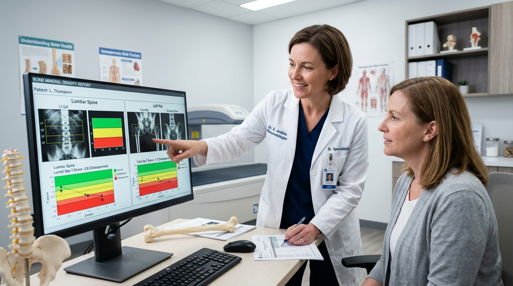

Receiving a bone mineral density report with the diagnosis of "osteopenia" often leaves patients in an unsettling middle ground: you do not yet have overt osteoporosis, but your bone microarchitecture is visibly thinning. Far from being a reason for panic, an osteopenia diagnosis is your greatest proactive window to halt bone loss and rebuild structural strength.
1. Demystifying the DEXA T-Score
Dual-Energy X-ray Absorptiometry (DEXA) measures bone mineral density in grams per square centimeter and compares it against a healthy young adult reference population:
- Normal Bone Density: T-score of -1.0 or higher.
- Osteopenia (Low Bone Mass): T-score between -1.0 and -2.5.
- Osteoporosis: T-score of -2.5 or lower.
Crucially, a DEXA scan evaluates multiple anatomical sites—chiefly the lumbar spine (L1–L4) and the femoral neck. Even if your hip T-score is -1.2, a lumbar spine score of -2.4 indicates localized trabecular vulnerability that warrants targeted intervention.
2. The FRAX Algorithm: Quantifying 10-Year Fracture Risk
Bone density is only one component of fracture vulnerability. At RheumaCare, we calculate your Fracture Risk Assessment (FRAX) score, integrating clinical variables such as age, family history of hip fracture, corticosteroid use, smoking history, and rheumatoid arthritis.
If your 10-year probability of a major osteoporotic fracture exceeds 20%—or your hip fracture probability exceeds 3%—preventive pharmacologic therapy is clinically indicated even within the osteopenia range.
3. Wolff's Law: How Resistance Exercise Rebuilds Bone
Bones are dynamic living tissue that continuously remodel in response to mechanical stress. Under Wolff's Law, when muscles exert tensile load across tendons into bone, piezo-electric signals stimulate osteoblasts to lay down fresh hydroxyapatite matrix.
- Progressive resistance training: Squats, deadlifts, and overhead presses under proper coaching 2–3 times weekly.
- Impact loading: Brisk walking, heel drops, or low-impact jumping (if cleared by your rheumatologist).
- Avoid excessive spinal flexion: Avoid loaded forward spinal twisting or extreme toe touches which increase vertebral wedge compression risk.
4. The Biochemical Triad: Calcium, Vitamin D3, and Vitamin K2
Supplementing with calcium alone is outdated medicine. Optimal bone deposition requires balanced biochemical synergy:
- Dietary calcium priority: Aim for 1,200 mg daily from dairy, fortified nut milks, canned sardines, and dark leafy greens.
- Vitamin D3 (2,000–4,000 IU): Ensures intestinal calcium absorption. Target a serum 25-OH Vitamin D level of 40–60 ng/mL.
- Vitamin K2 (MK-7, 100–180 mcg): Activates osteocalcin, the biochemical chaperone that anchors calcium into bone mineral matrix while keeping it out of vascular walls.

About Dr. Diego Ramos
Dr. Diego Ramos specializes in metabolic bone diseases, secondary osteoporosis, and non-surgical musculoskeletal rehabilitation. He directs RheumaCare's Bone Health and Fracture Prevention Program.